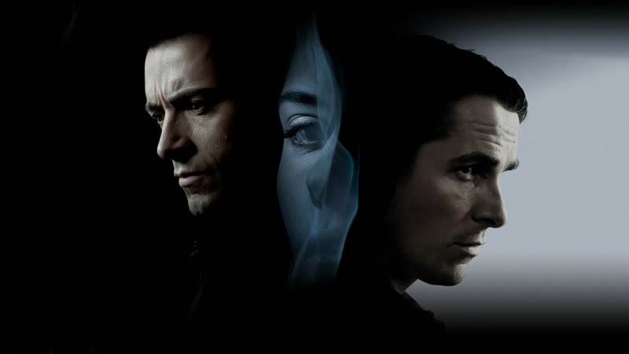
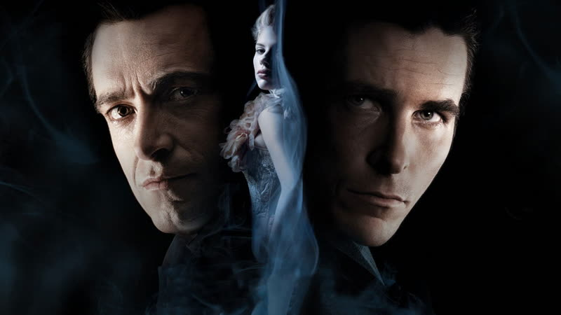
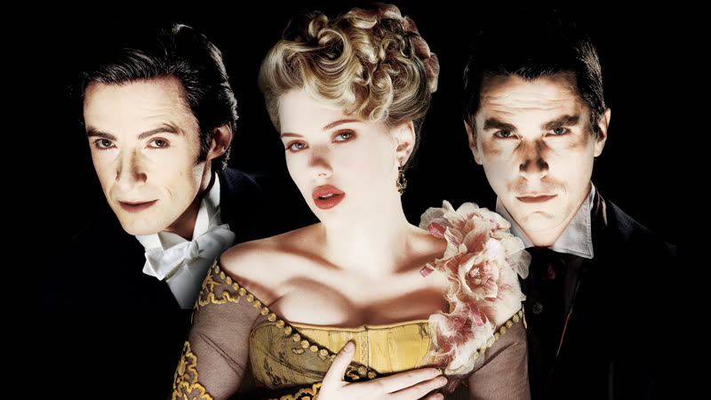
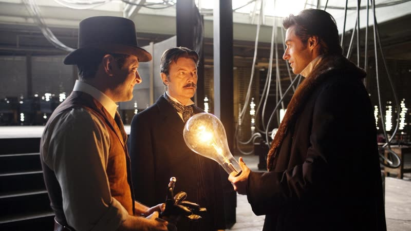

2006
The Prestige
Two Victorian stage magicians destroy each other over a single trick, told through diaries read inside diaries, with a twin-shaped secret hidden in plain sight.
How it plays with time
The outer frame is Borden waiting to be hanged. Inside it he reads Angier's diary, and inside that diary Angier reads Borden's, so each account sends the viewer back to a different stretch of the feud. The order you learn things in is the trick: the twin secret sits in plain sight while the diaries direct your attention elsewhere. source
Themes
- Obsession
- Angier, determined to beat his rival's teleportation trick, takes a machine from Tesla and stakes his own life on it. Night after night he steps into the apparatus and lets the show continue, whatever it does to him. The wish to win has overtaken every other reason. source
- Deception
- The film closes on the revelation that 'Borden' was two identical men sharing one life. Looking back, the secret was in front of us the whole time while the story pointed our eyes at the hands, the diaries and the stage. source
- Duality
- The two magicians are built as mirrors: one a hands-on working-class craftsman, the other a polished showman. Neither is allowed to be simply the hero or the villain, and the twin secret makes the doubling literal. source
- Sacrifice
- Each trick demands something real in return. Angier's solution to the Transported Man leaves him drowning in a tank beneath his own stage while the audience applauds above, and the film asks what a person owes to art that they cannot get back. source
- The machine
- Angier travels to meet Nikola Tesla, who builds him a device that duplicates whatever stands in it. The invention works better than anyone wants, and the film sets it beside the real Tesla and Edison rivalry as a second war running behind the first. source
Where it came from
- The film adapts Christopher Priest's 1995 novel. Producer Valerie Dean brought the book to Nolan, who read it in London and passed it to Jonathan; the brothers then spent about five years on the script. Christopher Nolan, Jonathan Nolan source
- Nolan said the script borrows the three-act shape of a magic trick (the pledge, the turn, the prestige), and was built to steer the audience away from planted clues. Christopher Nolan source
- Nolan argued that the audience cooperates in being deceived: viewers know it is an illusion and want to be taken somewhere surprising. Christopher Nolan
The trick that you play on the audience is played with the audience's collaboration.
source - Nolan told Variety the film depended on journals within journals and stories within stories, which echoed the novel's literary devices and were hard to carry into cinema (as reported by Wikipedia). Christopher Nolan source
- Tom Shone's book The Nolan Variations (2020) may discuss further influences on the film. Not fetched, so nothing is claimed from it. Tom Shone unverified
Stills




Stills © their studios, used here for commentary and criticism.
People who keep coming back
- Jonathan Nolan, Co-writer: also memento, the dark knight, the dark knight rises, interstellar
- Emma Thomas, Producer: also following, memento, insomnia, batman begins, the dark knight, inception, the dark knight rises, interstellar, dunkirk, tenet, oppenheimer, the odyssey
- Wally Pfister, Cinematographer: also memento, insomnia, batman begins, the dark knight, inception, the dark knight rises
- Lee Smith, Editor: also batman begins, the dark knight, inception, the dark knight rises, dunkirk
- David Julyan, Composer: also following, memento, insomnia
- Nathan Crowley, Production designer: also batman begins, the dark knight, interstellar, dunkirk, tenet
- Michael Caine, Actor, John Cutter: also batman begins, the dark knight, inception, the dark knight rises, interstellar, tenet
- Christian Bale, Actor, Alfred Borden: also batman begins, the dark knight, the dark knight rises
How it was received
Mostly positive. Critics praised the performances, the production design and the structure, and were split on the ending. Ebert gave three stars but called the final reveal a flaw, and Variety found it gimmicky. It earned two Oscar nominations, for art direction and cinematography. Metacritic 66. Rotten Tomatoes 77%.
Its standing has grown. The A.V. Club listed it among the best films of the 2000s, Empire placed it in its 21st-century top 100, and the WGA ranked the screenplay 82nd in its 2021 list of the century's best. A 20th anniversary re-release is announced for January 2027.
Three things most people miss
- The film plays fair like a magic act. Clues such as the dead canary and the goldfish bowl carried by Ching Ling Soo are visible early, so the finale reads as confirmation of what the camera showed rather than a cheat. source
- The deaths are mirrored. Angier drowns in a tank like his wife did, and Borden goes to the gallows as his own wife's death echoes, so the story keeps circling the same few wounds. source
- The film is a heavy reworking of the novel. The Nolans cut the spiritualism subplot and swapped the modern-day frame for Borden awaiting the gallows, changes Priest approved of. source
Cast
Hugh Jackman as Robert Angier; Christian Bale as Alfred Borden; Michael Caine as John Cutter; Scarlett Johansson as Olivia Wenscombe; Rebecca Hall as Sarah Borden.